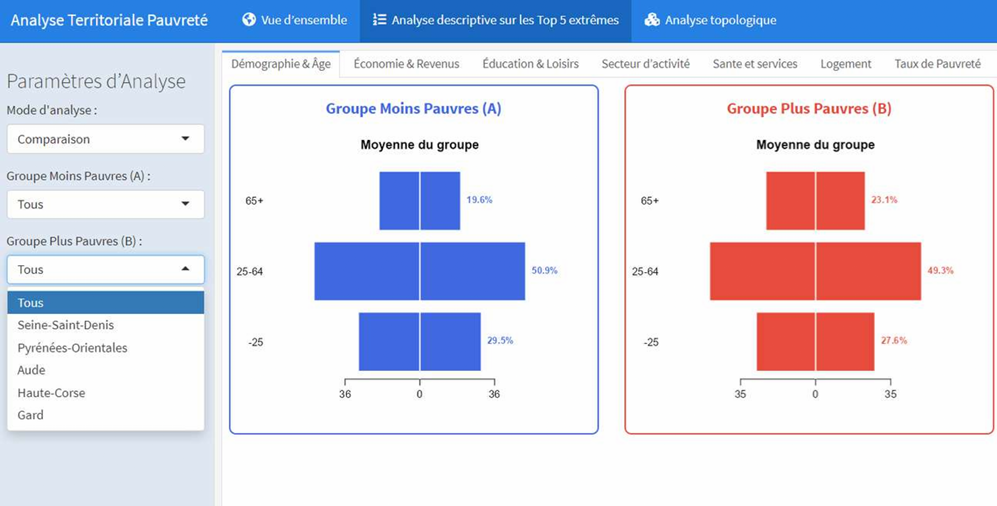
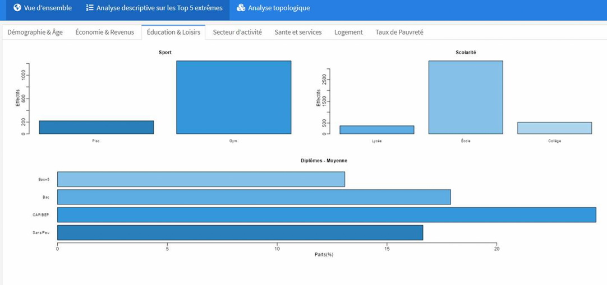
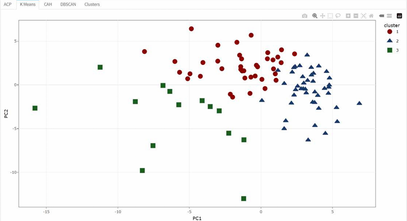
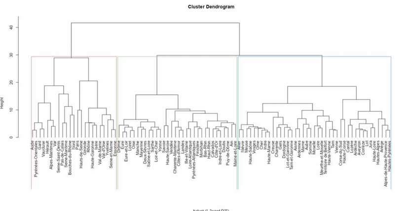
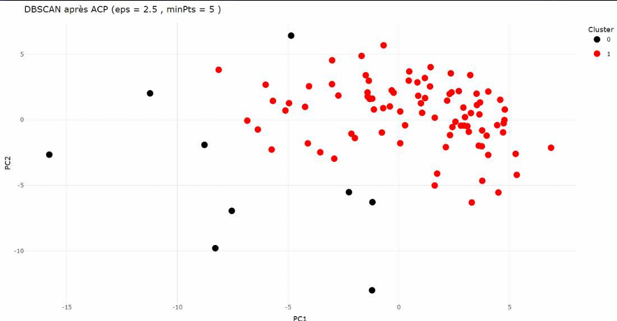
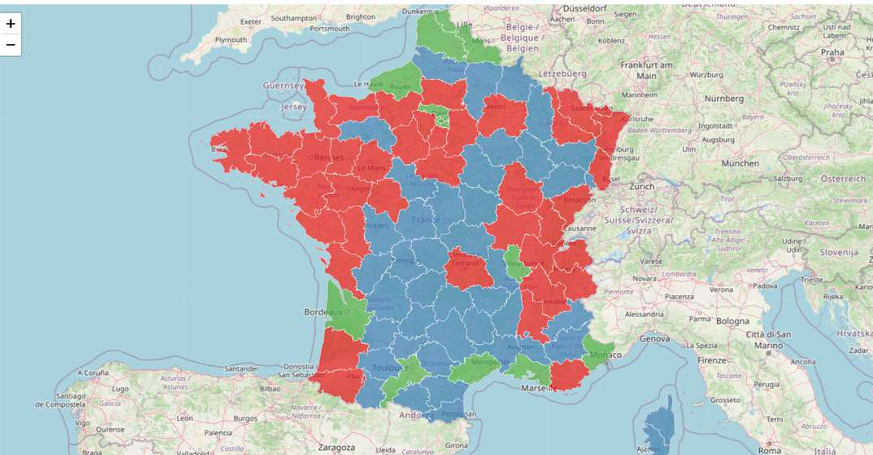

SAÉ 4.09 : Reporting d'une Analyse Multivariée via RShiny
Contexte & Problématique Décisionnelle
En 2021, la France métropolitaine comptait 9,1 millions de personnes vivant sous le seuil de pauvreté monétaire, soit 14 % de la population. L'analyse des données met en lumière un fait structurel majeur : sans l'impact stabilisateur des transferts fiscaux et sociaux (minima sociaux, allocations logement, prestations familiales), ce taux grimperait à 21 % (soit près de 14 millions de citoyens).
Mandaté par l'État au niveau central, l'objectif de ce projet consistait à bâtir une solution décisionnelle automatisée, visuelle et interactive permettant de cartographier, suivre et évaluer la pauvreté à l'échelle départementale et régionale pour accroître l'efficacité des politiques publiques de ciblage.
Données Multi-sources & Périmètre d'Étude
Afin d'apporter une vision holistique (sociale, économique et infrastructurelle) aux décideurs, nous avons extrait, nettoyé et fusionné un volume conséquent d'indicateurs géographiques issus de l'INSEE (Statistiques Locales) sur un périmètre temporel et spatial axé sur la France métropolitaine :
- Données de cadrage (2021) : Taux de pauvreté globaux, poids des prestations sociales et structures familiales (familles monoparentales).
- Indicateurs Démographiques et Logement (2022) : Tranches d'âge, statuts d'occupation (locataires, part de HLM), taux de vacance et typologies de logements.
- Secteurs Économiques (2023) : Répartition des entreprises (agriculture, industrie, tertiaire) et effectifs de la fonction publique (santé, enseignement, action sociale).
- Infrastructures de Proximité (2024) : Densité médicale (urgences, généralistes, pharmaciens), services (banques, commerces) et équipements sportifs ou scolaires.
Architecture & Organisation de l'Application Web
Développée sous l'environnement R (Shiny / Flexdashboard), l'interface ergonomique a été compartimentée en trois grands piliers analytiques pour guider naturellement l'utilisateur dans l'exploration :
1. Vue d'Ensemble
Onglet unique faisant office d'introduction macroéconomique globale. Il expose la répartition géographique et l'état des lieux des taux de pauvreté en métropole selon les classes d'âges.
2. Analyse Descriptive
Découpée en 7 onglets thématiques interactifs répondant précisément aux exigences de l'État : Démographie, Économie/Revenus, Éducation/Loisirs, Secteurs d'activité, Santé/Services, Logement, et focus sur les populations vulnérables (monoparentalité, locataires).
3. Analyse Topologique
Le cœur mathématique du projet décliné sur 5 onglets dédiés. Il intègre le moteur d'analyse multivariée pour regrouper et segmenter les départements selon leurs profils de précarité.



Moteur d'Analyse Statistique Multivariée (Clustering)
Pour dépasser les simples constats descriptifs et identifier les départements qui se ressemblent ou s'opposent, nous avons mis en place une chaîne algorithmique avancée :
- Analyse en Composantes Principales (ACP) : Réduction de la dimensionnalité de nos dizaines de variables d'infrastructures et de revenus pour projeter les départements sur les axes factoriels de la richesse et de la ruralité, évitant ainsi la colinéarité.
- Clustering Multi-approches : Implémentation et comparaison croisée de plusieurs algorithmes de classification automatique pour isoler des typologies de territoires stables :
- K-Means & CAH (Classification Ascendante Hiérarchique) : Idéaux pour scinder les structures régionales classiques et identifier des grappes homogènes.
- DBSCAN : Exploité pour filtrer le bruit et repérer les profils départementaux atypiques ou marginaux.




Compétences Techniques Démontrées
- Data Engineering & Fusion : Jointure de tables multi-annuelles (2021 à 2024) de l'INSEE sur le code officiel géographique (COG).
- Modélisation Multivariée : Maîtrise opérationnelle des algorithmes non supervisés (ACP, CAH, K-Means, DBSCAN) via les packages
FactoMineRetcluster. - Développement Web Réactif : Programmation de tableaux de bord dynamiques (R Shiny / Flexdashboard) intégrant des composants fluides pour l'aide à la décision publique.
Accéder à l'Application Web RShiny Consulter la Présentation (PPT)
⬅ Retour au portfolio